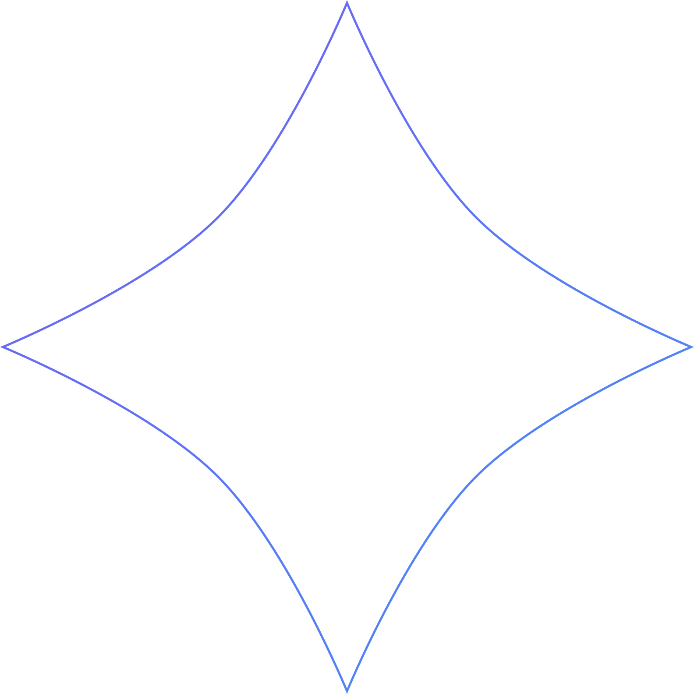
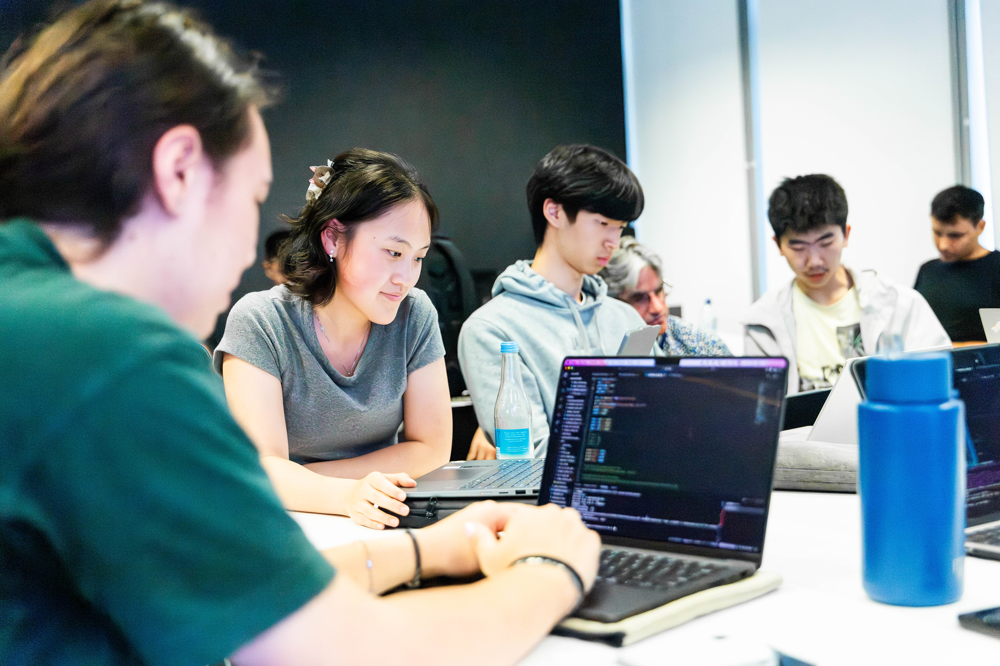
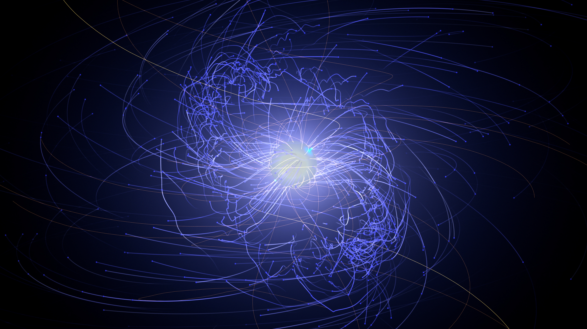
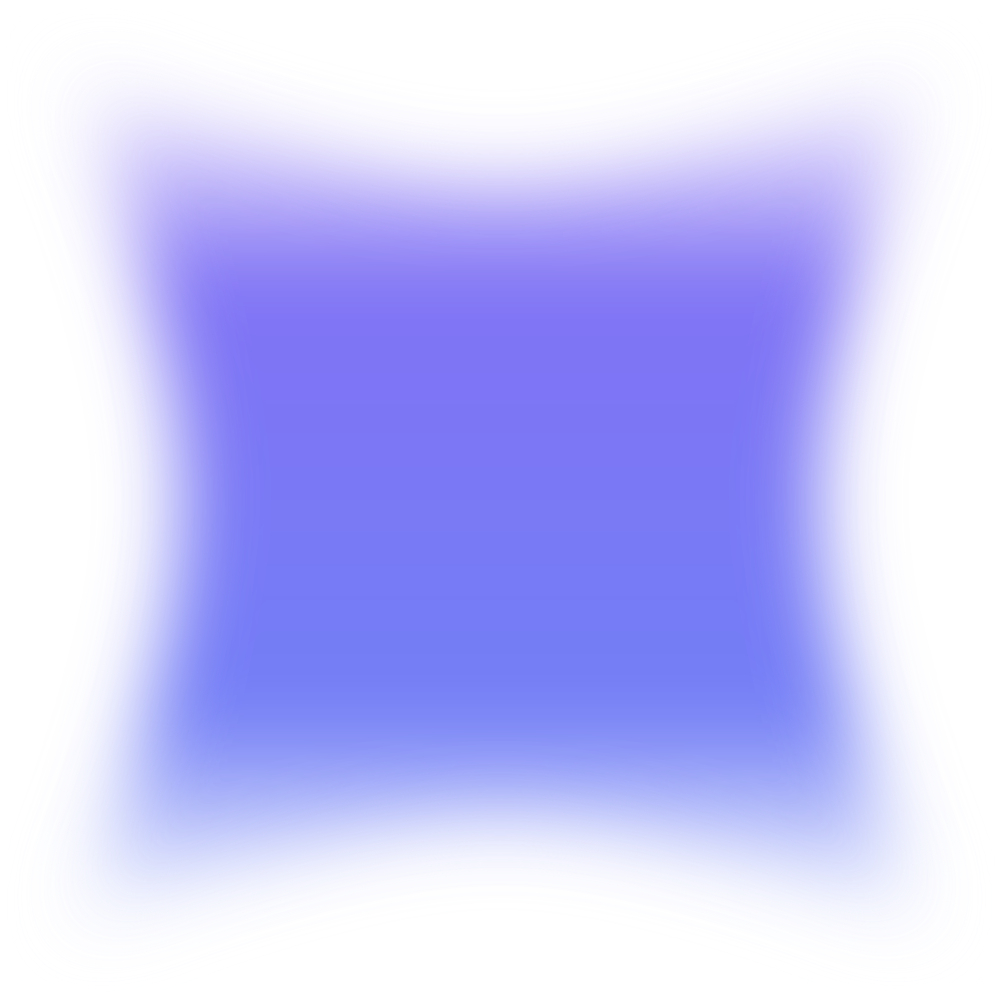
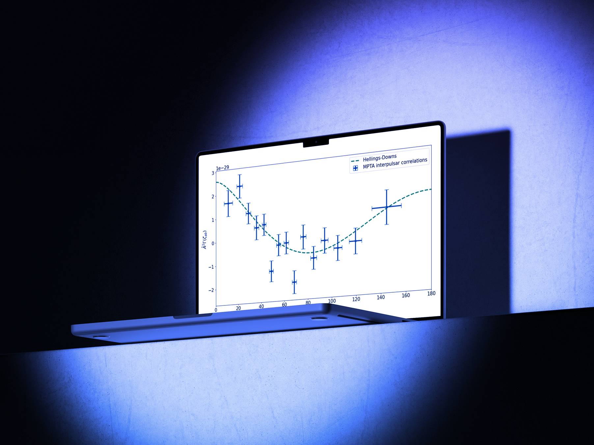
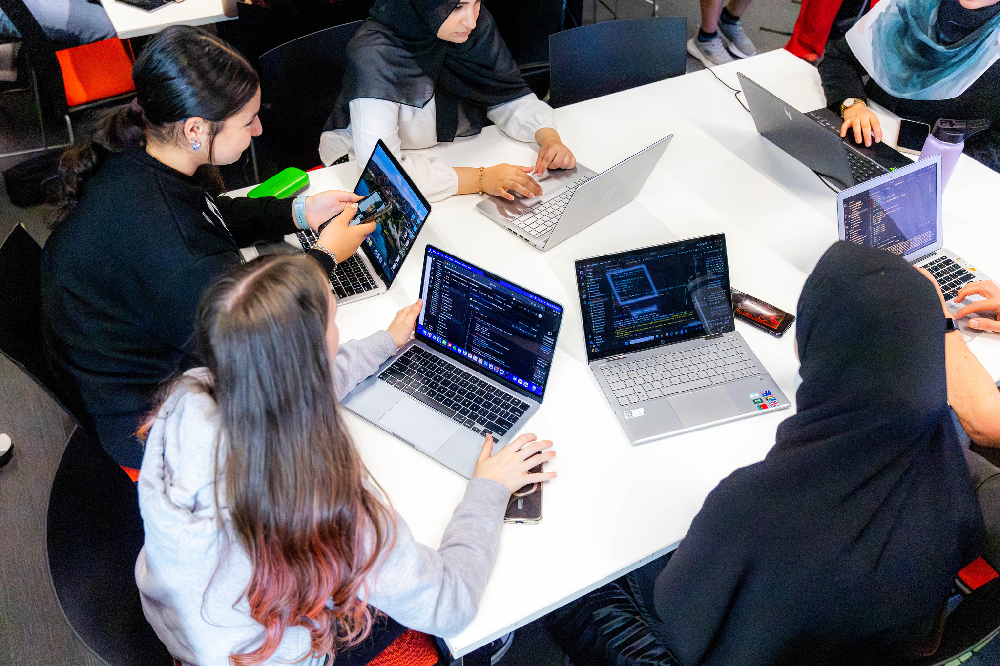

Discovering Nanohertz Frequency Gravitational Waves Using Pulsar Timing Arrays
See Project
See Project

ASTRAL's student programs transform curiosity into capability through real research, leadership, and industry-connected opportunities, accelerating future STEM careers, and building a more innovative, STEM driven society.
87 72 89
ASTRAL is building a cohort of STEM student leaders of the future that can both act as role models and participate in cutting-edge astrophysics research. ASTRAL students are taught the rigour of the scientific process, and skills in astrophysics, supercomputing, technology, research analytics and leadership.
They are encouraged to use ASTRAL's unique presentation tools to teach their peers about their experiences on both social media and face-to-face activities. Yes, this website was developed by one of our students!
Image: Students constructing accurate 3D models of stellar clusters using data from the Gaia Telescope

87 72 89
Astrophysics is the science that explores the cosmos through observation and theoretical models. ASTRAL students learn advanced spectroscopy, stellar evolution, and observational techniques using world-class telescopes.
Image: The movement of particles around a special type of neutron star called a pulsar.

87 72 89
Work Experience
Week long work experience program at the Centre for Astrophysics and Supercomputing at the Swinburne University of Technology. Click below for the application form
Work Experience Application Form
Work Experience Application Form
The MilliPHeDe (milli-PhD) Summer Program
This 3-week summer internship allows students the paid opportunity to participate in active research in the ARC Centre of Excellence for Gravitational Wave Discovery (OzGrav), focusing on accomplishing a focused research task during those three weeks.
Students acquire skills in a multitude of areas, such as programming, supercomputers, documentation, data analysis, automation and much more. Students also get to learn about astronomy topics related to the research task. Some examples are pulsar astronomy, gravitational waves, black holes, fast radio bursts, etc. Additionally, they learn how to work in team environments, manage stress, and the environment of workplaces through this three-week internship, skills that can be applied in any career of choice.
This program runs during December and January (during summer in the southern hemisphere) and are run at Swinburne University of Technology's Hawthorn Campus in Melbourne.
Weekly Engagement During The School Term
In these weekly sessions, we continue to work on mini-projects throughout the term in a similar format to our MilliPHeDe (milli-PHD) program, with the aim of keeping students engaged and working on something new.
These sessions are typically run online for a maximum of 2 hours a week, and are hosted, organised and run by A.S.T.R.A.L. mentors, where students join virtually to update each other on their components of the project and to continue to work on research.
Public Lectures and Social Media Content Development
Throughout the year, students are taught how to use the exclusive content creation tool created by OzGrav (The ARC Centre of EXCELLENCE for Gravitational Wave Discovery), called OzVU, and get the opportunity to create outreach content to inspire other students about the potential for them to learn new skills through astronomy.

87 72 89
See Project
See Project


87 72 89
87 72 89
2024
2024
2025
2025
2026
ASTRAL helped me turn curiosity into practical confidence. I learned how research in astrophysics actually works, built stronger coding habits, and worked with mentors who made complex ideas feel achievable.
“ASTRAL was such a beneficial experiences for me. Space has always fascinated me yet I came into the program with little knowledge of how astrophysics works. I learnt about supercomputers, leadership, coding and the science behind the constellations we see every night. ASTRAL is an experience I will always remember and I am very grateful for it.”

87 72 89

Image: Students collecting and analysing stellar data from the Gaia Telescope using Python.
OR SEE OUR FREQUENTLY ASKED QUESTIONS HERE
Image: Charged particles around a pulsar. ASTRAL students have conducted research using these objects. See the Projects page for more details.